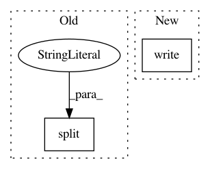

04d0a9bbfc085d244ee5abed1e4591202a8bd4cb,web/minstServingHandler.py,,do_inference,#Any#Any#,130
Before Change
// 调用 grpc 代码，将图片转换成数组，让后放到 grpc 调用。
def do_inference(hostport, img_file):
host, port = hostport.split(":")
print(host, port)
// 创建 python grpc 代码调用。
channel = implementations.insecure_channel(host, int(port))
After Change
prediction = str(exception)
print(exception)
else:
sys.stdout.write(".")
sys.stdout.flush()
response = numpy.array(
result_future.result().outputs["scores"].float_val)
// print("response:\n",result_future.result())
In pattern: SUPERPATTERN
Frequency: 3
Non-data size: 2
Instances
Project Name: pythonstock/stock
Commit Name: 04d0a9bbfc085d244ee5abed1e4591202a8bd4cb
Time: 2017-10-26
Author: yhy
File Name: web/minstServingHandler.py
Class Name:
Method Name: do_inference
Project Name: bashtage/linearmodels
Commit Name: 9b29c3bae8fff2e31edeb911c69840b53974e45b
Time: 2017-03-16
Author: kevin.k.sheppard@gmail.com
File Name: setup.py
Class Name:
Method Name:
Project Name: ricsinaruto/Seq2seqChatbots
Commit Name: f1bd7447547f58e82d5a2fe78e7e1b5a506f640c
Time: 2019-05-30
Author: ricsinaruto@hotmail.com
File Name: t2t_csaky/scripts/create_metrics_latex.py
Class Name:
Method Name: